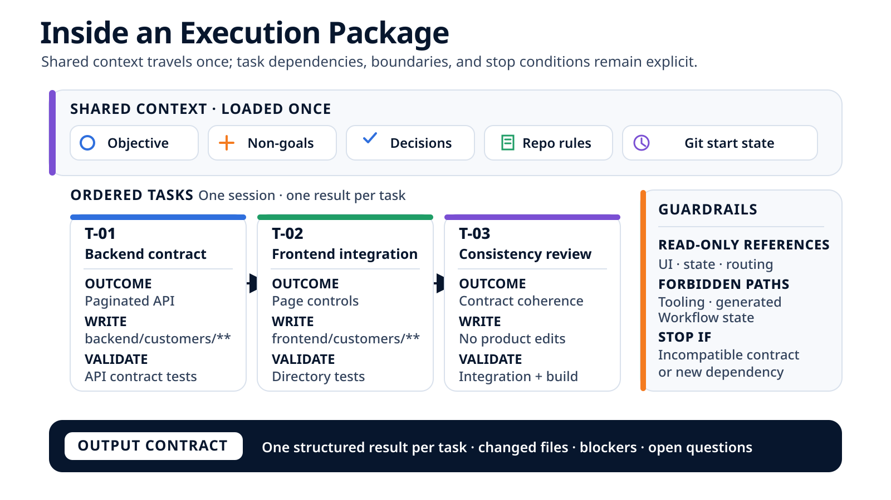

What the Agent Actually Receives: Anatomy of an Execution Brief¶
An agent does not need a super-prompt that summarizes the entire project. It needs a bounded execution brief: a compilation of the expected outcome, executable tasks, repository rules, human decisions, validations, and local state at the moment the work begins.
In the previous article, we followed a Structured Feature from its brief to local review. Between planning and implementation was a short but decisive step in the timeline: building the package sent to the agent runner.
The question appears simple: what does the agent actually receive when it is time to code? The answer should be neither "the entire repository," nor "the entire conversation," nor "a highly detailed prompt." Those approaches blend intent, rules, and observed facts into prose whose origins become difficult to reconstruct.
A framework that implements this principle must assemble several sources before handing a task block to the agent: the brief, the plan, selected tasks, the repository contract, recorded decisions, context references, validations, and a view of the starting Git state. The example below shows what this execution brief should contain to preserve provenance, the authority of each piece of information, and the starting state.
The execution package is not prose designed to persuade the agent to work well. It is the execution brief that tells the agent what to accomplish, where its constraints come from, and where its authority ends.
Why this is not a super-prompt¶
A prompt gives instructions to a model. An execution package describes a unit of work for a system: an ordered task block, its shared context, and its task-specific constraints.
A super-prompt may contain an objective, rules, and excerpts from documentation. But once everything is merged into prose, the roles become blurred: a list of files may be mistaken for write authorization, a planning suggestion for a repository rule, or an old decision for a current fact.
An execution package preserves these distinctions. It can be transported to the runner in a structured form, then partially rendered as text for the model. The transport format is not the point. What matters is that, before and after the runner session, the workflow can:
- identify the source of every important constraint;
- select the tasks that are actually executable;
- distinguish writable paths from read-only references;
- identify a human decision that has already been made;
- record the local state from which execution begins;
- compare the result with the declared boundaries;
- preserve the expected validations independently of what the agent claims to have run.
This structure does not create system-level permissions. Writing "read-only" in a package does not remove the process's write access. The package describes the authority granted; a sandbox can enforce it before the fact, or a diff check can detect a violation afterward. The workflow must always state which mechanism is in place.
Four sources, four forms of authority¶
The execution package for customer-directory pagination is compiled from four families of sources.
| Source | What it contributes | Primary authority | What it cannot decide |
|---|---|---|---|
| Human | Objective, non-goals, acceptance criteria, answers, and decisions | Product intent and reserved decisions | The facts actually present in the code or Git |
| Repository | Architecture, ownership, stable boundaries, and standard commands | Technical rules and policies that apply to the project | The product outcome expected from this package, unless it is already contractual |
| Planning | Decomposition, dependencies, relevant context, and per-task validations | Operational ordering derived from the intent and rules | Broaden the brief or bypass a repository policy |
| Runtime | Selected tasks, current attempt, observed Git state, and tracking location | Facts about the current execution | Invent intent or approve business risk |
This is not a single hierarchy in which one source always overrides the others. Authority depends on the subject.
Humans have authority over the outcome to achieve. The repository has authority over ownership of code areas. The plan orders the work without being allowed to rewrite either of those contracts. The runtime has authority over what it observes now, but a Git fact does not say whether a change is desirable.
This separation makes conflicts manageable. If the plan places a protected directory among the writable paths, the workflow must not present that inconsistency as valid authorization. If the brief requests behavior that depends on an unresolved product decision, the plan must not turn that gap into an implicit technical choice. In both cases, compiling the execution brief should fail or produce an explicit stop.
Provenance says where information came from. Authority says what decisions the information is authoritative for. Both must survive compilation.
Compiling the execution brief¶
The compilation can be represented without depending on any particular tool:
brief and human decisions ─┐
│
repository contract ───────┼─> selection and resolution ─> execution package ─> agent runner
│
plan, tasks, dependencies ─┤
│
observed Git state ─────────┘
The word "compilation" is not decorative. Like a compiler, this step transforms several inputs with different roles into a narrower executable representation. It can also reject an inconsistent input.
For a Structured Feature, the workflow must perform at least five operations.
First, it selects a block of tasks that can run in sequence. The first task is ready at the start of the session; later tasks become executable as the preceding tasks in the block finish. An open decision or a dependency outside the block continues to prevent execution.
Second, it preserves the boundaries defined for each task and constructs the package's allowed write envelope. Grouping three tasks does not grant the agent general authorization across the repository: the observed diff must remain within the controlled union of those boundaries.
Third, it attaches decisions that have already been made. If the first page number and initial page size have been decided, the agent should neither ask those questions again nor choose different values.
Fourth, it selects context shared by the package, followed by references specific to each task. The brief, stable rules, and shared decisions are loaded only once.
Finally, it records an observation of the starting state, with its known coverage, so that a pre-existing modification is not attributed to the runner.
A teaching execution package for pagination¶
Here is a teaching execution brief for the same feature used in the previous articles. The paths and values are illustrative. The representation favors readability; its transport format may vary across tools.

# Teaching example.
package:
objective: >-
Add server-side pagination to the customer directory and allow users
to move between pages from the interface.
non_goals:
- "Add persistent filters"
- "Modify the router or shared interface primitives"
acceptance_criteria:
- "The API returns the items, the current page, and the total result count."
- "The interface preserves its loading, empty, and error states."
- "A pagination action loads the requested page."
tasks:
- id: T-01
outcome: "Extend the response and cover pagination edge cases."
depends_on: []
writable: ["backend/customers/**"]
read_only_references: ["frontend/customers/**"]
validations: ["Targeted pagination contract tests"]
- id: T-02
outcome: "Consume the contract and render the page controls."
depends_on: [T-01]
writable: ["frontend/customers/**"]
read_only_references:
- "backend/customers/contracts.*"
- "shared/ui/**"
validations: ["Customer-directory behavior tests"]
- id: T-03
outcome: "Review consistency between the contract and its integration."
depends_on: [T-01, T-02]
writable: []
read_only_references:
- "backend/customers/**"
- "frontend/customers/**"
validations:
- "Pagination integration tests"
- "Project build"
human_decisions:
- "The first page is numbered 1."
- "The default page size is 25 items."
forbidden_for_entire_package:
- "shared/routing/**"
- "tooling/**"
- "orchestration/**"
stop_if:
- "The contract must become incompatible with an existing consumer."
- "A new dependency is required."
- "The solution requires a change to the shared foundation."
git_start:
repository_detected: true
expected_branch: "<working branch>"
observed_local_state: "<status recorded before execution>"
base_revision: "not immutably linked in this excerpt"
index_coverage: "to be confirmed"
In a real system, the package or its associated manifest should link the objective and criteria to the human-authored brief, the task block to the plan, each boundary to the repository contract, decisions to the preserved answers, and the Git state to a runtime observation.
All three tasks appear in the same package, but they do not become a flat list. T-02 depends on T-01; T-03 depends on both earlier tasks. The runner receives this ordering, executes the block in a single session, and returns a separate result for each task. If T-01 reveals an incompatibility or a missing decision, the package must stop before reporting T-02 and T-03 as complete.
This grouping avoids loading the same brief, contract, and decisions three times. It also allows the agent to preserve consistency between the shape of the backend response, its use in the frontend, and the broader validations. For a larger feature, the plan can naturally produce several coherent packages instead of one oversized batch.
Per-task boundaries remain useful for preparing the execution brief and interpreting the runner's report. However, if the workflow takes only one Git snapshot before and one after the session, the independent observation applies at the package level: it shows which paths changed within the overall allowed envelope. Attributing one particular file to T-01 or T-02 remains a runner declaration unless intermediate checkpoints are added.
Context references are not writable paths either. They explain where to find a contract or pattern. The write boundary remains separate. This distinction prevents a file recommended for reading from being interpreted as an invitation to modify it.
Finally, validations belong to the execution brief, not to the agent's final report. Their presence means, "these checks are expected." It does not mean that they were run. The workflow must separately record the commands that were actually executed, their results, and any missing validations.
Provenance must be inspectable¶
Provenance can be made useful without imposing a complex schema. For each decisive piece of information, four attributes are often enough:
| Information | Review question |
|---|---|
| Source | Which document, decision, or observation supplied this value? |
| Authority | Does this value express intent, a rule, a plan, or a fact? |
| Freshness | Which version, decision, or attempt does it apply to? |
| Transformation | Was it copied, summarized, derived, or added by the runtime? |
Consider the page size. If it comes from a human answer recorded after the brief was written, the package must carry the most recent decision and retain a link to its origin. Copying it only into the plan creates two sources that can diverge.
Now consider the writable paths. They may be derived from the repository's general contract, then narrowed by the plan. The effective result is the intersection of the authorizations, not the most permissive list. The plan can reduce write authority; it should not be able to make a protected area writable.
This logic also makes the execution brief auditable before the run. A reviewer can inspect not only the expected outcome, but also the decisions the compiler made while assembling the context.
The starting Git state is an input, not final evidence¶
The initial Git state deserves an explicit place in the package because post-execution checks depend on a comparison. At a minimum, the workflow should know whether it is in a repository, which branch it is on, which revision serves as the starting point, and whether the working tree already contains changes to tracked files—staged or unstaged—as well as untracked files.
An initial view of local state and previously modified paths is enough to reduce some confusion during local execution. It is not enough to claim unambiguously that a change belongs to one attempt or revision.
Several limitations must remain visible:
- a local status does not, by itself, bind the package to an immutable base commit;
- a dirty working tree complicates attribution of changes to the runner;
- the index and working tree must be observed separately;
- untracked files must be explicitly included in the observation scope;
- the expected branch does not prove that the complete execution happened on that branch;
- a starting snapshot does not replace the Git state recorded at the end.
The accurate claim is therefore not, "the package proves that the repository was clean." It is, "the package records this view of the initial state, with this coverage." Linking the evidence to a pull request requires more: base and head commits, index state, environment information, and validations executed on the relevant revision. We will return to this in the article about evidence.
A structured package can still contain too much context¶
Structure reduces amnesia and ambiguity of provenance. It does not guarantee that the selection is relevant.
Putting the full brief, the plan, every task, every instruction, and a broad view of the repository into the package may seem prudent. Yet it can dilute the executable task block, carry obsolete decisions, and multiply apparent contradictions.
Before including an element, the workflow can apply four questions:
- Is it necessary to execute one of the package's tasks or decide to stop?
- Is its source sufficiently authoritative and current?
- Is there a smaller representation that preserves the useful meaning?
- Should it be included, or merely referenced with a reason to consult it?
Minimal context is not the shortest context. Removing a stop condition would be poor compression; copying an entire document when one precise reference is enough adds noise. The package must support action and make reserved decisions recognizable, not replace the repository inside the context window.
What the execution brief actually changes¶
A well-constructed execution package improves three concrete things.
First, it makes the run reconstructible: intent, decisions, scope, and expected validations remain accessible without rereading the conversation.
Second, it makes deviations classifiable. A modification to a read-only area can be compared with an explicit boundary; a missing validation appears as absent instead of disappearing into an optimistic summary.
Finally, it separates responsibilities more clearly. The agent proposes code and a structured report. The workflow preserves state, checks scope, and runs the planned validations. Humans decide questions beyond the authority of the tasks in the package and judge the residual risk.
But the package does not repair an unstable brief. It cannot make an overbroad context selection relevant. It does not turn a path policy into a sandbox. It does not guarantee that the selected tests cover the behavior. And by itself, it does not prove that the final diff corresponds to a merge-ready revision.
A precise execution brief does not make the agent infallible. It makes the agent's instructions, boundaries, and deviations inspectable.
Audit your own execution package¶
Before adding more automation, a team can take a real package or reconstruct one from a recent task and check the following points:
- ☐ The objective and non-goals come from an identifiable human source.
- ☐ Every acceptance criterion describes an observable outcome.
- ☐ Executable tasks are distinguished from tasks shown only for context.
- ☐ Dependencies prevent premature execution.
- ☐ Writable, read-only, and forbidden paths have distinct meanings.
- ☐ A context reference is never confused with write authorization.
- ☐ Human decisions already made are preserved with their origin.
- ☐ Stop conditions identify the required decision and role.
- ☐ Expected validations exist independently of the agent's report.
- ☐ The initial Git state clearly states what was and was not observed.
- ☐ A conflict among the brief, plan, and repository rules either blocks compilation or remains explicitly visible.
- ☐ Every context block can justify its presence in the current package.
If one of these elements exists only in chat, the package is incomplete. If it exists but its origin cannot be recovered, the package lacks provenance. If it is present but cannot be checked, it remains an instruction and must be presented as such.
Conclusion¶
What the agent receives before coding affects its ability to stay within the authority it has been granted more than its ability to generate code.
The brief provides intent. The repository provides rules. The plan provides decomposition and dependencies. Human decisions close questions that have already been settled. The runtime selects a coherent block of tasks that can execute in sequence, adds local state, and hands the runner a bounded execution brief.
The quality of this assembly is not measured by its length. It is measured by whether, for every important piece of information, we can answer: where did it come from, what is it authoritative for, is it still current, and how will the result be checked against that expectation?
The remaining question is what happens when execution cannot comply with this brief: a decision is missing, a boundary is crossed, or a validation fails. That is the subject of the next article: when the task must stop, and how to resume it without losing its history.